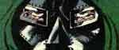
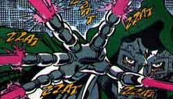
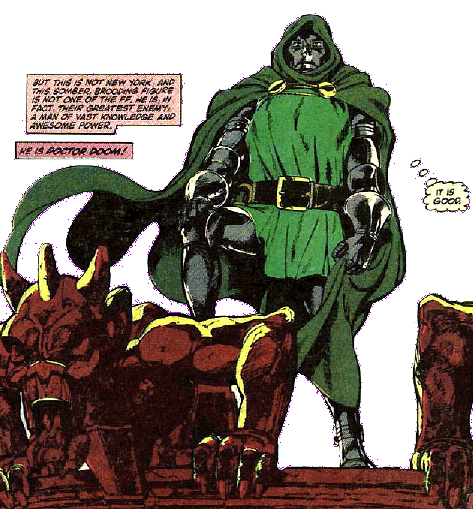

DOCTOR DOOM
a
|
 |
People Who Think He's Not So Bad: Come rain, snow or Infinity Wars, Silver Sable keeps her yearly dinner date with Von Doom, one of the few State chores she actually enjoys. His foster son Kristoff loves him so much the little guy sometimes thinks he is Doom. And Storm of the X-Men once found herself attracted to one of Doom's robot counterparts, |
|
so who knows what would happen if the two ever actually met? Most Despicable Act: Oh, geez; let me think ... there was the time he siphoned the power cosmic from the Silver Surfer; that wasn't nice. Wait! There was the time he offered Reed Richards' son Franklin to Mephisto in exchange for his mother, and the time he mind-wiped his ward, Kristoff, two very not nice acts (as Roman Schwachofer points out, "child abuse is a whole new level of evil."). He locked the X-Men up in various torture chambers designed to push them beyond their physical limits; not nice again -- hold on, that was one of his Doom-bots. Never mind. (I told you those things were a lot like Doom!) It was Doom himself, however, who engineered the explosion in which it appeared he and Richards' perished. Apart from being hard on Reed's wife Sue, AKA the Invisible Woman, it didn't do much good for the stability of Latveria. Let's face it; where Doctor Doom's concerned, there are too many despicable acts to keep track of! Kind of like Doom-bots, in fact... |
